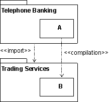
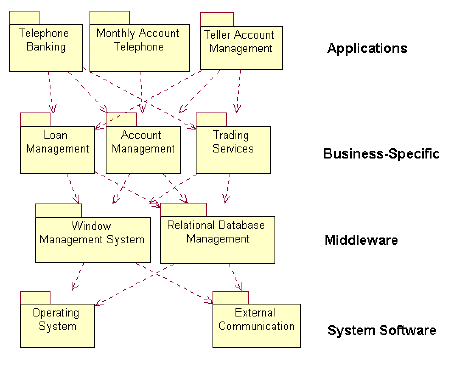

| Рекомендация: Импорт зависимостей при реализации |
 |
|
| Связанные элементы |
|---|
ОбъяснениеУстановление зависимостей между подсистемами - важный аспект формирования структуры модели реализации. Элемент подсистемы-клиента можно скомпилировать в элементы подсистемы-поставщика только если подсистема-клиент импортирует систему-поставщик. Для установления таких зависимостей используйте импорт зависимостей от одной системы к другой, с направлением в сторону подсистемы, от которой установлена зависимость. Пример: Следующая диаграмма компонентов иллюстрирует импорт зависимостей между подсистемами реализации.  Для подсистемы Банковские услуги по телефону установлен импорт зависимости к подсистеме Коммерческие услуги, благодаря чему элементы Банковских услуг по телефону можно компилировать в общие (видимые) элементы Коммерческих услуг. ИспользованиеАрхитектурный контрольВажное назначение импорта зависимостей - контроль видимости между системами и внедрение архитектуры в реализующие классы. Когда архитектор программного обеспечения определяет импорт зависимостей на ранних стадиях разработки, реализующие классы могут только устанавливать ссылки от элементов реализации к общим элементам в импортированных подсистемах. Контроль импорта помогает поддерживать архитектуру программного обеспечения и избегать нежелательных зависимостей. Подсистемы можно распределить по уровнямМодель реализации обычно разбита на уровни. Количество уровней не ограничено и отличается в зависимости от ситуации. Ниже приведено описание типичной архитектуры, разделенной на четыре уровня:
 Пример разделенной на уровни модели реализации для банковской системы. Стрелки показывают импорт зависимостей между подсистемами. |
© Copyright IBM Corp. 1987, 2006. Все права защищены.. |